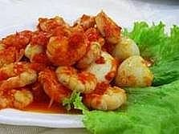

Sambel Udang Telur Puyuh

Bahan:
- 350 gr udang segar kupas.
- 15 btr telur puyuh matang
Bumbu:
- 8 bh cabai besar
- 5 bh bawang merah
- 3 bh bawang putih
- sdt garam
- 1 sdt gula
- 50 ml santan cair
- Minyak untuk menumis
Cara membuatnya:
- Haluskan cabai besar dan bawang merah. Kemudian, iris tipis bawang putih. Lalu sisihkan.
- Panaskan minyak, tumis bumbu halus dan bawang putih hingga harum. Masukkan udang, aduk rata dan masak hingga udang matang.
- Masak terus hingga tanak sebentar. Kemudian masukkan telur puyuh. Aduk rata. Angkat.